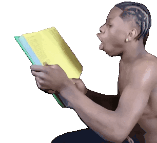
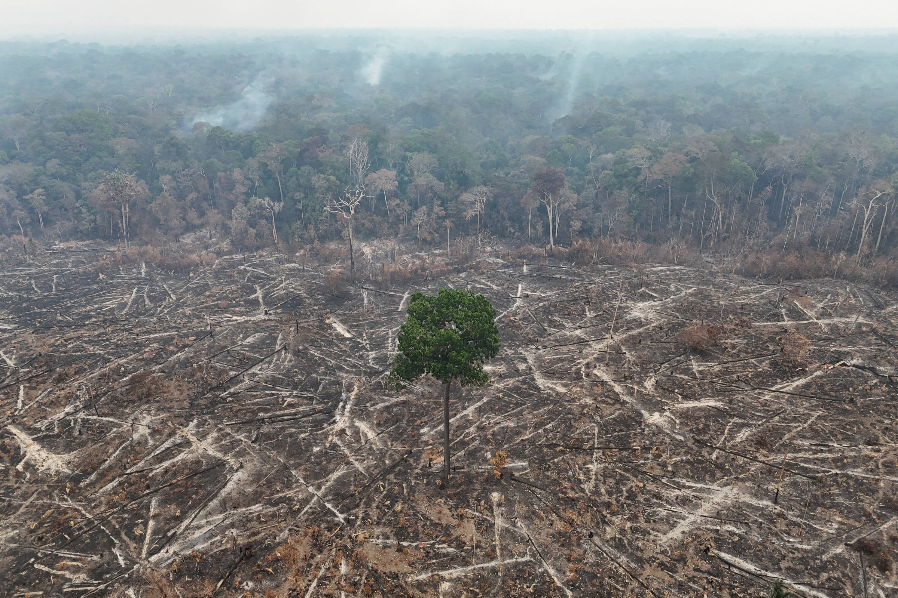
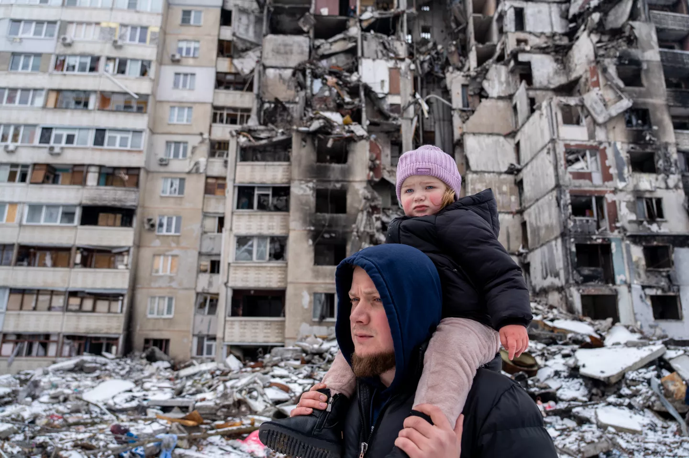
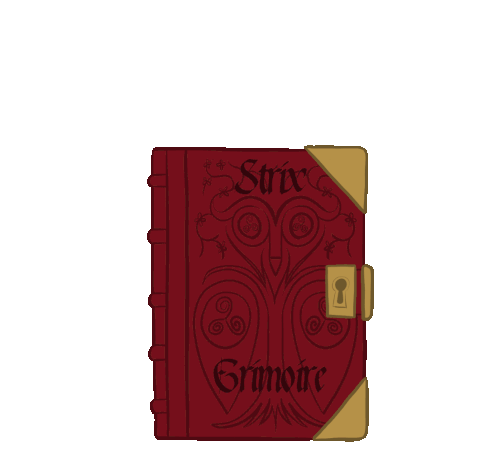
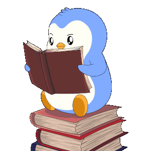
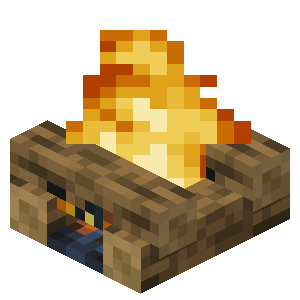

Bem-vindo ao meu portfólio
Feito por: Carlos Eduardo.

Feito por: Carlos Eduardo.
01 / Sobre mim
Meu nome é Carlos Eduardo Pereira Dantas, sou estudante do 2º ano do Ensino Médio Integrado ao Técnico em Logística, na ETEC Alberto Santos Dumont, em Guarujá, São Paulo, e estou sempre buscando aprender coisas novas e desenvolver minhas habilidades, tanto na área acadêmica quanto na pessoal.
Durante minha trajetória escolar, participei de olimpíadas científicas, como a OBMEP e a OBA, conquistando menções honrosas, uma medalha de bronze regional em Matemática e uma medalha de prata nacional em Astronomia, essas experiências contribuíram para desenvolver meu raciocínio lógico, minha disciplina e minha vontade de superar desafios.
Além dos estudos, procuro investir no meu desenvolvimento por meio de diferentes atividades, como futebol, natação, corrida e música, também concluí um curso de Assistente Administrativo pelo SEST SENAT, que ampliou meus conhecimentos sobre o ambiente profissional e despertou ainda mais meu interesse em adquirir experiência no mercado de trabalho.
Atualmente, tenho como objetivo continuar evoluindo academicamente e profissionalmente, concluir o Ensino Médio com formação técnica em Logística e ampliar meus conhecimentos em tecnologia e desenvolvimento de sistemas, uma das minhas principais metas é ingressar em uma universidade no exterior, onde pretendo aprofundar meus conhecimentos, conhecer novas culturas e aproveitar oportunidades que contribuam para minha formação.
Para alcançar esses objetivos, pretendo continuar estudando, aprimorar meu inglês, desenvolver projetos próprios e buscar oportunidades de aprendizado e experiência profissional, acredito que a dedicação, a disciplina e a disposição para aprender são fundamentais para transformar meus planos em resultados,
Minha expectativa para os próximos anos é construir uma trajetória da qual eu possa me orgulhar, conquistando minha independência, ampliando minhas oportunidades e me tornando um profissional cada vez mais preparado para enfrentar os desafios do futuro.


JESUS TE AMA

02 / Me conhecendo melhor
Tenho grandes sonhos para o meu futuro e, mais do que apenas imaginá-los, quero construir um caminho que me permita realizá-los, um dos meus maiores objetivos é estudar em uma universidade no exterior, como o MIT ou Harvard, conhecer novas culturas, ampliar meus horizontes e descobrir até onde sou capaz de chegar.
Também sonho em construir uma carreira na área de tecnologia, trabalhando com desenvolvimento de sistemas, criando projetos e transformando ideias em soluções que possam fazer a diferença, quero que meu trabalho seja uma oportunidade constante de aprender, inovar e superar meus próprios limites.
Além disso, busco conquistar minha independência financeira, proporcionar uma vida melhor para minha família e ter a liberdade de escolher meus próprios caminhos, sem deixar que a falta de oportunidades determine até onde posso chegar.
Sei que realizar esses sonhos exige muito mais do que vontade, por isso, meus objetivos atuais são concluir o Ensino Médio com um bom desempenho, aprimorar meu inglês, aprofundar meus conhecimentos em programação e buscar oportunidades que me aproximem das minhas metas, quero construir um futuro do qual me orgulhe, não apenas pelas conquistas que alcançar, mas também pela pessoa que me tornarei durante essa jornada.
Afinal, não quero apenas sonhar com uma vida diferente, quero me preparar para construí-la.

03 / Participações
A visita técnica à Vila Belmiro, estádio do Santos Futebol Clube, foi uma oportunidade de conhecer de perto um lugar marcado pela história do futebol brasileiro, durante a visita, pude observar a estrutura do estádio e conhecer um pouco mais sobre o espaço onde grandes momentos do esporte aconteceram.
A experiência também me permitiu perceber a importância da organização e do planejamento para manter um ambiente desse porte, desde a conservação das instalações até a preparação dos espaços para receber jogadores, funcionários e visitantes, além disso, pude relacionar essa experiência com conhecimentos adquiridos durante minha formação técnica em Logística.
Já a EXPOTEC foi um evento voltado à apresentação do curso para futuros estudantes, proporcionando a oportunidade de mostrar um pouco do que aprendemos em nossa formação, durante a preparação, participei da criação de maquetes e da decoração da sala, atividades que exigiram criatividade, organização e colaboração entre os alunos.
A realização do evento também permitiu desenvolver habilidades importantes, como o trabalho em equipe, a divisão de tarefas, o planejamento e a administração dos materiais disponíveis, além de contribuir para que pudéssemos apresentar o curso de Logística de maneira visual e interessante aos visitantes.
As duas experiências foram importantes para minha trajetória escolar, pois permitiram observar a aplicação da organização e do planejamento em diferentes contextos, enquanto a visita à Vila Belmiro proporcionou o contato com um espaço esportivo tradicional, a EXPOTEC possibilitou colocar em prática habilidades desenvolvidas ao longo do curso, contribuindo para meu crescimento pessoal e acadêmico.


Atualidades

04 / Atualidades
Manter-se informado sobre os acontecimentos do Brasil e do mundo é fundamental para compreender as transformações políticas, econômicas, sociais e culturais que ocorrem constantemente. As notícias nos ajudam a conhecer diferentes realidades, entender os desafios enfrentados pela sociedade e acompanhar decisões que podem influenciar diretamente a vida da população.
Nesta seção, serão apresentadas notícias relevantes sobre temas como política, economia, tecnologia, meio ambiente e relações internacionais. Cada assunto permite ampliar nossos conhecimentos, desenvolver o pensamento crítico e refletir sobre possíveis soluções para os problemas atuais. Dessa forma, o objetivo é reunir informações importantes e compreender como os acontecimentos do presente podem influenciar o futuro da sociedade.
A preservação da Floresta Amazônica continua sendo um dos maiores desafios ambientais do Brasil. A floresta possui uma enorme diversidade de espécies animais e vegetais, além de desempenhar um papel importante na regulação do clima e no armazenamento de carbono. Por esse motivo, o desmatamento representa uma preocupação não apenas para os brasileiros, mas também para a comunidade internacional.
Entre as principais causas do desmatamento estão a expansão agropecuária, a exploração ilegal de madeira, a ocupação irregular de terras e as queimadas. Essas atividades podem provocar a destruição de habitats naturais, a perda de biodiversidade e o aumento das emissões de gases de efeito estufa. Além disso, a degradação da floresta pode afetar o regime de chuvas e prejudicar comunidades que dependem diretamente dos recursos naturais.
O combate ao desmatamento depende de medidas como o fortalecimento da fiscalização, a aplicação das leis ambientais, a recuperação de áreas degradadas e o incentivo a atividades econômicas sustentáveis. Embora existam iniciativas para proteger a floresta, ainda é necessário conciliar o desenvolvimento econômico com a conservação ambiental. A preservação da Amazônia é fundamental para reduzir os impactos das mudanças climáticas e garantir recursos naturais para as próximas gerações.

A guerra entre Rússia e Ucrânia permanece como um dos principais conflitos da atualidade. Desde o início da invasão russa em fevereiro de 2022, o confronto provocou mortes, deslocamentos populacionais e destruição de cidades e infraestruturas. Milhões de pessoas foram afetadas, e diversas famílias precisaram deixar suas casas para buscar segurança em outras regiões ou países.
Além das consequências humanitárias, o conflito provocou mudanças nas relações diplomáticas e militares entre diferentes nações. Países europeus aumentaram sua atenção à segurança regional, enquanto governos e organizações internacionais discutem sanções econômicas, apoio militar e iniciativas diplomáticas. Os ataques contra instalações de energia também podem comprometer o fornecimento de eletricidade e aquecimento, especialmente durante períodos de temperaturas baixas.
A guerra também influencia a economia mundial, principalmente por causa de seus efeitos sobre o comércio, os gastos militares e os mercados de energia e alimentos. As consequências podem atingir países distantes do campo de batalha, demonstrando como os conflitos internacionais estão conectados à economia global. A busca por uma solução diplomática continua sendo importante para reduzir o sofrimento da população, restabelecer a segurança e construir condições para uma paz duradoura.

As eleições presidenciais brasileiras de 2026 chegaram a uma etapa decisiva após o primeiro turno, realizado em 4 de outubro. Os candidatos Luiz Inácio Lula da Silva, do Partido dos Trabalhadores (PT), e Flávio Bolsonaro, do Partido Liberal (PL), foram os mais votados e disputarão o segundo turno, marcado para 25 de outubro. Segundo os resultados divulgados pelo Tribunal Superior Eleitoral (TSE), Flávio Bolsonaro terminou a primeira votação na frente, com aproximadamente 47% dos votos válidos, enquanto Lula recebeu cerca de 45%.
Durante a campanha, os candidatos apresentaram propostas diferentes para enfrentar os desafios do país. Entre os assuntos em destaque estão a economia, a geração de empregos, a segurança pública, os programas sociais e a administração dos recursos públicos. A situação econômica brasileira também ocupa espaço importante no debate, principalmente em relação à inflação, ao crescimento da dívida pública e à necessidade de equilibrar os gastos do governo.
A disputa eleitoral também demonstra a importância da participação dos cidadãos na democracia. Por meio do voto, a população escolhe seus representantes e influencia as decisões que serão tomadas nos próximos anos. Além de acompanhar os discursos dos candidatos, é importante que os eleitores consultem fontes confiáveis, comparem as propostas e verifiquem informações antes de compartilhá-las, especialmente nas redes sociais.
O resultado do segundo turno definirá quem governará o Brasil pelos próximos quatro anos. As decisões do próximo presidente poderão influenciar áreas como educação, saúde, economia, meio ambiente e relações internacionais. Por isso, as eleições de 2026 representam um acontecimento importante para o futuro do país e reforçam a necessidade de informação, responsabilidade e participação política.

Analise Literária

05 / Analise literária
A leitura é uma parte fundamental da formação acadêmica, pois contribui para o desenvolvimento da interpretação de textos, do pensamento crítico e da capacidade de argumentação. Durante os processos seletivos para universidades, algumas instituições indicam obras literárias de leitura obrigatória, que abordam diferentes períodos históricos, estilos literários e questões sociais importantes.
Nesta seção, serão apresentadas análises de livros exigidos em vestibulares e processos seletivos de instituições de ensino superior. Cada análise buscará explorar os principais acontecimentos da obra, seus personagens, os temas abordados e as mensagens transmitidas pelo autor. O objetivo é compreender melhor cada livro, reconhecer sua importância literária e refletir sobre as ideias que permanecem relevantes na sociedade atual.
Publicado em 1844, A Moreninha é um romance de Joaquim Manuel de Macedo e uma das obras importantes do Romantismo brasileiro. A história começa quando Augusto, um estudante de Medicina conhecido por sua inconstância amorosa, faz uma aposta com seus amigos: caso se apaixonasse verdadeiramente por uma mulher e permanecesse fiel a esse sentimento, escreveria um romance contando sua experiência. Durante uma visita à ilha onde vive a avó de um de seus amigos, ele conhece Carolina, uma jovem alegre, inteligente e cheia de personalidade.
Ao longo da narrativa, Augusto e Carolina desenvolvem uma relação marcada por brincadeiras, conversas e sentimentos que crescem gradualmente. Entretanto, Augusto guarda a lembrança de uma promessa feita na infância a uma menina que conheceu em uma situação especial. Essa promessa influencia sua maneira de enxergar o amor e cria um mistério que acompanha o desenvolvimento da história. Enquanto os personagens se aproximam, o passado começa a ganhar importância para compreender os sentimentos do protagonista.
No desfecho, Augusto descobre que Carolina é justamente a menina a quem havia prometido amor na infância, o que permite que os dois fiquem juntos. A obra valoriza o amor verdadeiro, a fidelidade, as promessas e a idealização romântica dos relacionamentos. Além disso, apresenta costumes e comportamentos da sociedade brasileira do século XIX, utilizando uma linguagem acessível e situações humorísticas. Por essas características, o romance tornou-se uma referência na consolidação da prosa romântica brasileira.
Clara dos Anjos é um romance de Lima Barreto que retrata o cotidiano dos subúrbios do Rio de Janeiro no início do século XX. A protagonista é Clara, uma jovem negra que vive com seus pais em uma família humilde. Sua criação acontece em um ambiente relativamente protegido, no qual recebe cuidados e orientações que, embora importantes, não a preparam completamente para enfrentar as desigualdades e os preconceitos existentes fora de casa.
A vida de Clara muda quando ela conhece Cassi Jones, um homem branco conhecido por seduzir mulheres e evitar as responsabilidades decorrentes de seus relacionamentos. Acreditando nas promessas e nas demonstrações de afeto de Cassi, Clara desenvolve sentimentos por ele e passa a confiar em suas intenções. Entretanto, o comportamento do rapaz revela sua irresponsabilidade, e a jovem acaba sofrendo as consequências de uma relação marcada pela manipulação e pela desigualdade de poder.
Ao final, Clara percebe de maneira dolorosa como sua condição social e racial influencia o tratamento que recebe da sociedade. A obra critica o racismo, o preconceito de classe, a desigualdade de gênero e a hipocrisia das relações sociais. Por meio da trajetória da protagonista, Lima Barreto mostra como mulheres negras e pobres enfrentavam obstáculos para conquistar respeito, proteção e oportunidades. O romance continua relevante por estimular reflexões sobre discriminação, violência e desigualdade na sociedade brasileira.
O Sítio do Picapau Amarelo é o universo literário criado por Monteiro Lobato, composto por histórias infantis que misturam fantasia, aventura, conhecimento e elementos do folclore brasileiro. Nesse ambiente vivem personagens marcantes, como Dona Benta, uma senhora sábia que compartilha seus conhecimentos, Tia Nastácia, responsável por preparar os alimentos e cuidar de diversas atividades domésticas, e as crianças Narizinho e Pedrinho. Também se destacam Emília, uma boneca de pano falante e questionadora, e o Visconde de Sabugosa, um personagem conhecido por sua inteligência.
Nas diferentes histórias, os personagens participam de aventuras que envolvem lugares imaginários, criaturas fantásticas, figuras mitológicas e personagens do folclore nacional. As situações vividas no sítio frequentemente despertam a curiosidade das crianças e permitem explorar assuntos como história, ciência, geografia e literatura. A imaginação de Emília, a curiosidade de Narizinho e Pedrinho e os conhecimentos de Dona Benta contribuem para criar narrativas nas quais o aprendizado aparece junto com o entretenimento.
De maneira geral, as histórias do Sítio valorizam a criatividade, a curiosidade, a autonomia e a busca pelo conhecimento. A obra teve grande influência na literatura infantil brasileira e aproximou gerações de leitores do universo dos livros. Entretanto, algumas passagens também são analisadas criticamente por reproduzirem preconceitos raciais e sociais presentes no contexto histórico em que foram escritas. Como o Sítio do Picapau Amarelo reúne diversas narrativas, os acontecimentos específicos dependem do volume escolhido para leitura.
Ler cansa né?
Descanse aqui😇

Publicada em 1955, Morte e Vida Severina é uma obra poética de João Cabral de Melo Neto, conhecida como um auto de Natal pernambucano. A narrativa acompanha Severino, um retirante que deixa o sertão nordestino e segue em direção ao litoral em busca de melhores condições de vida. Durante a viagem, ele percorre diferentes regiões e encontra pessoas que enfrentam problemas semelhantes aos seus, como a fome, a pobreza, a falta de trabalho e a morte prematura.
Ao longo do caminho, Severino presencia situações que revelam a dureza da vida dos trabalhadores pobres do Nordeste. Ele observa enterros, conversa com pessoas que dependem do trabalho para sobreviver e percebe que a miséria não está restrita à região de onde veio. Mesmo acreditando que encontrará melhores oportunidades ao chegar ao Recife, o protagonista descobre que a desigualdade social também está presente na cidade. Essas experiências aumentam seu desânimo e o fazem questionar o sentido de continuar vivendo em condições tão difíceis.
Quando chega ao Recife, Severino considera tirar a própria vida, pois acredita que seu futuro será marcado apenas pelo sofrimento. Entretanto, a notícia do nascimento de uma criança renova sua esperança e apresenta a vida como uma possibilidade de resistência, mesmo diante da pobreza. A obra denuncia as desigualdades sociais, a exploração dos trabalhadores e a falta de oportunidades, utilizando versos marcados pela repetição, pela musicalidade e pela linguagem objetiva. O contraste entre morte e vida representa a luta pela sobrevivência e a capacidade humana de encontrar esperança em situações adversas.
Publicado em 1875, A Escrava Isaura é um romance de Bernardo Guimarães que aborda a escravidão no Brasil do século XIX. A protagonista, Isaura, é uma jovem escravizada que recebeu educação e apresenta características valorizadas pela sociedade da época, mas continua sem liberdade por causa de sua condição. Filha de uma mulher escravizada e de um homem branco, ela vive em uma realidade na qual sua origem e sua situação jurídica determinam seu destino, apesar de sua formação e de seus desejos pessoais.
A situação de Isaura se torna mais difícil após a morte de sua senhora, quando Leôncio, o herdeiro da propriedade, passa a persegui-la e tenta obrigá-la a aceitar suas vontades. Isaura rejeita suas investidas e procura preservar sua dignidade, mas enfrenta ameaças e limitações impostas pelo sistema escravista. Durante a narrativa, ela tenta escapar dessa situação e encontra pessoas dispostas a ajudá-la, entre elas Álvaro, um jovem que se apaixona por ela e se opõe à escravidão.
A história desenvolve conflitos relacionados à liberdade, à dignidade humana, ao amor e ao abuso de poder. Ao apresentar o sofrimento da protagonista, Bernardo Guimarães denuncia a crueldade da escravidão e contribuiu para a divulgação de ideias abolicionistas no século XIX. A obra também possui características do Romantismo, como a idealização da personagem principal, os conflitos sentimentais e a oposição entre personagens considerados bons e maus. Atualmente, o romance pode ser estudado tanto por sua importância histórica quanto pelas contradições de sua representação da escravidão e das relações raciais.

Logistica em ação

04 / Logistica
O estudo da cadeia de suprimentos tem como objetivo compreender as etapas envolvidas no processo de produção e distribuição de um produto, desde a obtenção da matéria-prima até a entrega ao consumidor final, considerando a participação dos fornecedores, das indústrias, dos centros de armazenamento e dos meios de transporte.
Durante a análise, é possível identificar como o planejamento logístico, o controle de estoque, a gestão de compras e a distribuição contribuem para o funcionamento eficiente das operações, além de compreender a importância da comunicação e da integração entre os diferentes setores envolvidos.
O estudo também permite identificar possíveis problemas, como atrasos nas entregas, desperdícios, custos elevados e falhas no armazenamento, possibilitando a elaboração de estratégias para melhorar os processos, reduzir custos e aumentar a produtividade.
Dessa forma, compreender a cadeia de suprimentos é fundamental para entender como a logística conecta diferentes etapas de uma operação, garantindo que os produtos cheguem ao destino correto, no prazo esperado e nas condições adequadas.
A aquisição de matérias-primas é a etapa inicial da cadeia de suprimentos e consiste em obter os materiais necessários para a fabricação de um produto. Esse processo começa com a identificação das necessidades da empresa, que precisa determinar quais materiais serão utilizados, em quais quantidades e com que frequência deverão ser comprados.
Em seguida, a empresa procura fornecedores que ofereçam produtos de qualidade, preços competitivos e prazos de entrega adequados. Também é importante avaliar a confiabilidade desses fornecedores, pois atrasos ou problemas no fornecimento podem prejudicar as etapas seguintes da produção.
Um bom planejamento das compras ajuda a evitar a falta de materiais, reduzir gastos desnecessários e manter a produção funcionando corretamente. Dessa forma, a aquisição de matérias-primas contribui diretamente para o controle de custos e para a eficiência de toda a cadeia de suprimentos.

A produção e a fabricação são as etapas em que as matérias-primas recebidas dos fornecedores são transformadas em produtos que poderão ser comercializados. Nesse processo, os materiais passam por diferentes atividades, como preparação, montagem, processamento e acabamento, dependendo do tipo de produto fabricado.
Para que a produção aconteça de maneira eficiente, a empresa precisa organizar os funcionários, os equipamentos, os materiais e o tempo disponível. O planejamento da produção permite definir a quantidade de produtos que será fabricada e os recursos necessários para atender à demanda dos consumidores, evitando tanto a produção insuficiente quanto o excesso de mercadorias.
O controle de qualidade também é fundamental nessa etapa, pois permite verificar se os produtos atendem aos requisitos estabelecidos. Além disso, a utilização adequada dos recursos e a redução de desperdícios ajudam a diminuir os custos de fabricação, aumentar a produtividade e garantir que os produtos estejam prontos para serem armazenados e distribuídos.


você anotou tudo?
não? anote então :p

Após a fabricação, os produtos são encaminhados para os locais de armazenamento, onde permanecem até serem enviados aos distribuidores, pontos de venda ou consumidores. Essa etapa envolve o recebimento das mercadorias, a conferência das quantidades, a identificação dos produtos e a organização dos espaços utilizados para guardá-los.
A gestão de estoque tem como objetivo controlar a quantidade de produtos disponíveis, registrando as entradas e saídas das mercadorias. Esse acompanhamento permite que a empresa saiba quais itens estão armazenados, quais precisam ser repostos e quais estão próximos de acabar ou permanecem parados por muito tempo.
Uma boa organização do armazém facilita a localização e a movimentação dos produtos, reduzindo o tempo gasto na separação dos pedidos. Também é importante armazenar cada mercadoria em condições adequadas, evitando danos, perdas e vencimentos. Dessa maneira, o controle de estoque ajuda a equilibrar a disponibilidade de produtos com os custos de armazenamento, contribuindo para o atendimento eficiente dos pedidos.

O transporte e a distribuição são responsáveis por movimentar os produtos armazenados até seus destinos finais. Essa etapa pode envolver o envio das mercadorias para centros de distribuição, lojas, empresas ou diretamente para os consumidores. Para isso, a organização logística precisa definir como os produtos serão transportados e quais caminhos serão utilizados.
O planejamento do transporte considera fatores como a distância, as condições das estradas, o prazo de entrega, o volume da carga e os custos envolvidos. A escolha adequada do meio de transporte, como caminhões, navios, trens ou aviões, depende das características do produto, da urgência da entrega e da infraestrutura disponível.
Durante a distribuição, também é necessário acompanhar os pedidos, organizar as rotas e garantir que as mercadorias sejam transportadas com segurança. Atrasos, avarias e erros nas entregas podem gerar despesas adicionais e prejudicar a satisfação dos clientes. Por isso, uma distribuição bem planejada ajuda a reduzir custos, cumprir prazos e garantir que os produtos cheguem ao destino correto e em boas condições.

05 / controle de estoque e planilha
A gestão de estoque é uma atividade fundamental para a logística, responsável por planejar, organizar, controlar e monitorar os produtos e materiais armazenados por uma empresa. Seu principal objetivo é garantir que os itens estejam disponíveis nas quantidades necessárias e no momento certo, atendendo às demandas dos clientes e às necessidades da produção sem gerar custos desnecessários.
Esse processo envolve diversas atividades, como registrar a entrada e a saída de mercadorias, acompanhar a quantidade de produtos disponíveis, organizar o armazenamento, identificar itens com baixo nível de estoque e planejar a reposição de materiais. Além disso, é importante realizar inventários periódicos para comparar os registros com as quantidades físicas armazenadas e identificar possíveis perdas, danos ou divergências.
Uma gestão eficiente ajuda a evitar dois problemas comuns: o excesso de estoque e a falta de produtos. O excesso pode ocupar espaço desnecessário, aumentar os custos de armazenamento e causar perdas, principalmente quando os produtos possuem prazo de validade. Já a falta de mercadorias pode atrasar a produção, prejudicar as entregas e causar insatisfação nos clientes.
Para melhorar o controle, as empresas utilizam estratégias como o estoque mínimo, que indica a quantidade de segurança necessária para evitar a falta de produtos; o ponto de reposição, que determina quando um novo pedido deve ser realizado; e o controle de entradas e saídas, que permite acompanhar a movimentação das mercadorias. Esses métodos contribuem para decisões mais precisas e para o uso eficiente dos recursos disponíveis.
A gestão de estoque também está diretamente ligada a outras etapas da cadeia logística, como compras, armazenagem, produção e distribuição, pois um controle inadequado pode afetar todo o funcionamento da empresa. Por isso, manter informações atualizadas e planejar as reposições corretamente é essencial para reduzir custos, melhorar a produtividade e garantir que os produtos cheguem aos clientes no prazo esperado.
No simulador a seguir, você poderá colocar esses conhecimentos em prática por meio de ferramentas que permitem controlar a entrada e a saída de produtos, acompanhar as quantidades disponíveis em estoque e identificar quais itens precisam ser repostos. Além disso, será possível observar como a movimentação das mercadorias altera os níveis de estoque e compreender a importância de manter um controle atualizado para evitar a falta ou o excesso de produtos. Dessa forma, o simulador demonstra, de maneira prática e interativa, como uma gestão de estoque eficiente contribui para a organização, a redução de custos e o bom funcionamento das operações logísticas.
📦
150
⚠️
80
📥
21
📤
17